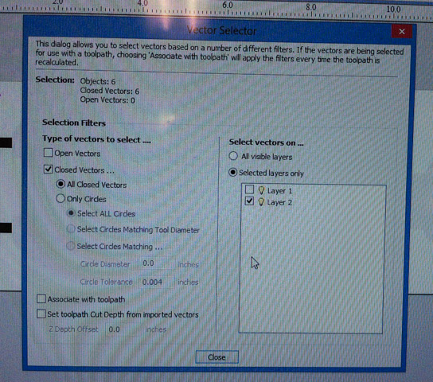

Material Size and Margins
You can add 1 inch to the length and width, then have symetrical as 0.5 for a margin around the model.
You can do this for when you want to cut a part out, and give it extra space between the piece and the outer material.
This is also where you should add tabs to your piece so that it will stay attached to the material while cutting.
Roughing Toolpath
Here are example settings for a roughing toolpath. (You might want to set the pass depth to be a bit deeper though, to go faster).
Changing the Toolpath Strategy will make the "pattern" that the bit makes different. 3D raster is usually longer, but you might get better results.
Finishing Toolpath
Here are example settings for a finishing toolpath. The finishing toolpath is for when you want to reach areas that the roughing did not and clean up some areas.
Pocket
If you want to mill out some pockets that you added to your design (say, for hold-downs), then you can use the tool to create a pocket toolpath:
On that screen, you can select which vectors you want to cut by the Vector Selector. So if the vectors that you want cut are on a sepparate layer, this makes it easy:
Preview Mode
The preview mode is helpful for seeing what will be milled. If you made any changes, remember to reset the preview.
Export Toolpaths
You can save the toolpaths that you want to cut to a file by selecting the toolpaths that you want in the list near the bottom. Make sure at the top 'Output all visible toolpaths to one file' is checked.